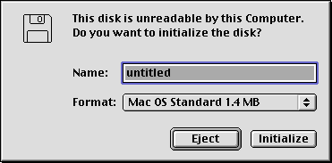
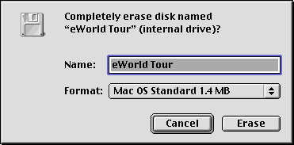

Legacy Document
Important: This document is part of the Legacy section of the ADC Reference Library. This information should not be used for new development.
Current information on this Reference Library topic can be found here:
ADC Home > Reference Library > Technical Notes > Legacy Documents > Carbon >
Important: This document is part of the Legacy section of the ADC Reference Library. This information should not be used for new development.
Current information on this Reference Library topic can be found here:
|
Updated: [Feb 1 1999]Chapter 1 - Introduction to File Management
|
|
Working directory reference number |
Directory ID |
Empty string or NIL |
The target object is the directory specified by
the directory ID in |
Page 2-36, Manipulating the Default Volume and Directory
Replace the last sentence in the first paragraph with the following:
"When an application starts up, its default directory is set to the directory in which the application resides. Thereafter, the application can designate any directory as its default directory."
drXTFlSize
and drCTFlSize field descriptions are wrongPage 2-62, Master Directory Blocks
Change the field descriptions to:
|
|
The size (in bytes) of the extents overflow file. |
|
|
The size (in bytes) of the catalog file. |
Page 2-69, Map Nodes
Replace the second and third paragraphs in the Map Nodes section with the following:
"A map node consists of a node descriptor and a single map record. The map record is a continuation of the map record contained in the header node and occupies 492 bytes (512 bytes in the node, less 14 bytes for the node descriptor, 2 bytes for each of the two record offsets at the end of the node, and rounded down to a multiple of a longword). (Note: The HFS file system's B*-tree manager reads the bitmap information a longword at a time.) A map node can therefore contain mapping information for an additional 3936 nodes.
If a B*-tree contains more than 5984 nodes (that is, 2048 + 3936, enough for around 25,000 files), the File Manager uses a second map node, the node number of which is stored in the ndFLink field of the node descriptor of the first map node. If more map nodes are required, each additional map node is similarly linked to the previous one."
Page 2-79, Volume Control Blocks
Add the following bit definition to vcbAtrb for System
7.5 or later:
|
Bit |
Meaning |
|---|---|
|
10 |
Set if the volume's blocks should not be cached
(System 7.5 and later only). This allows access to
RAM disk volumes to bypass the File Manager cache.
It has the same affect as setting the |
When a HFS volume is mounted with System 7.5 or later,
the File Manager calls the disk driver with a "Return Drive
Info" _Control call (csCode=23). Then if there are no
errors, it looks at the low-byte (bits 0-7) of csParam to
see if the drive type is ramDiskType (16, $10) or
romDiskType (17, $11) and if so, sets the vcbAtDontCache bit
in the VCB's vcbAtrb field. This allows access to RAM or ROM
disk volumes to bypass the File Manager cache. It has the
same affect as setting the noCache bit (bit 5 of ioPosMode)
for all File Manager reads and writes to the volume.
Non-block aligned requests may still be accessed through the
cache.
Driver Note: Drivers should not directly modify the
vcbAtDontCache bit in vcbAtrb. If the driver is for a RAM or
ROM disk, it should support _Control csCode 23 and say that
it is a RAM or ROM disk by returning ramDiskType (16, $10)
or romDiskType (17, $11) in the low-byte of csParam. Other
disk drivers should not set the vcbAtDontCache bit because
any future improvements made to the File Manager cache will
be lost on those drives.
vcbXTAlBks
and vcbCTAlBks field descriptions are wrongPage 2-81, Volume Control Blocks
Change the field descriptions to:
|
|
The size (in allocation blocks) of the extents overflow file. |
|
|
The size (in allocation blocks) of the catalog file. |
dQDrvSiz fields not used on 3.5"
floppy disksPage 2-85, The Drive Queue
|
Note: |
ioFlAttrib bits in
ParamBlockRec, HParamBlockRec, and CInfoPBRecPage 2-90, Basic File Manager Parameter Block, field
descriptions for the fileParam variant.
Page 2-96, HFS Parameter Block, field descriptions for the
fileParam variant.
Page 2-102, Catalog Information Parameter Blocks, field
descriptions common to both variants.
For files, the bits in ioFlAttrib have the following
meanings:
|
Bit |
Meaning |
|---|---|
|
0 |
Set if file is locked. Can be changed with the
|
|
1 |
Reserved. |
|
2 |
Set if resource fork is open. |
|
3 |
Set if data fork is open. |
|
4 |
Set if directory. (Always clear for files.) |
|
5 |
Reserved. |
|
6 |
Set if AppleShare server "copy-protects" the
file. Set by the AppleShare foreign file system
code when the server sets the |
|
7 |
Set if file (either fork) is open. |
For directories, the bits in ioFlAttrib have the
following meanings:
|
Bit |
Meaning |
|---|---|
|
0 |
Set if the directory is locked. Can be changed
with the |
|
1 |
Reserved. |
|
2 |
Set if the directory is within a shared area of the directory hierarchy. |
|
3 |
Set if the directory is a share point that is mounted by some user. |
|
4 |
Set if directory. (Always set for directories.) |
|
5 |
Set if the directory is a share point. Can be
set or cleared by |
|
6 |
Reserved. |
|
7 |
Reserved. |
ioACUser is filler2 in some
interface filesPage 2-100 and 2-103, Catalog Information Parameter
Blocks
Page 2-191, PBGetCatInfo
|
Note: |
VolMountInfoHeader data
structure includes flags wordPage 2-110, Volume Mounting Information Records
The VolMountInfoHeader data structure has been extended
to include a flags word. The data structure is now defined
as:
struct VolMountInfoHeader
{
short length; /* length of location data (including self) */
VolumeType media; /* type of media */
short flags; /* high-byte reserved for Apple, */
/* low-byte reserved for file system
specific use */
/* Variable length data follows */
};
|
In the flags word, bits 14 and 15 have been defined. All other bits in the high-byte of the flags word should be left clear. Bits in the low-byte of the flags word are file- system specific. For example, the AppleShare foreign file system uses bit 0 to determine if server greeting messages should be shown or suppressed.
Bit 15 in the flags word tells the file system that
accepts a VolumeMount request if user interaction can be
performed. If Bit 15 is set, the file system must not
perform user interaction. If Bit 15 is clear, the file
system may perform user interaction through the mechanism
supplied by the File System Manager (FSM).
Bit 14 in the flags word allows a file system to indicate
to the caller of VolumeMount that although the VolumeMount
request was successful, the VolMountInfo record passed needs
to be updated. Programs should ensure bit 14 of the flags
word is clear before calling VolumeMount and if bit 14 is
returned set, the VolMountInfo record should be updated by
calling PBGetVolMountInfoSize and PBGetVolMountInfo. If
VolumeMount is unsuccessful, bit 14 in the flags word should
be ignored.
Observant readers will note that the Alias Manager needs
to use bits 14 and 15 in the flags word to interact with
file systems when responding to a MatchAlias function
call.
ioPosMode usage by PBRead and
PBWrite requestsPage 2-121, PBRead
Page 2-122, PBWrite
The PBRead and PBWrite functions give programs much more
control over read and write operations than the high-level
FSRead and FSWrite functions because PBRead and PBWrite
allow access to the ioPosMode field.
Bits 0 and 1 of ioPosMode indicate where to start reading
or writing data in the file. The values allowed in ioPosMode
to set bits 0 and 1 are:
|
constant |
value |
description |
|---|---|---|
|
|
0 |
|
|
|
1 |
|
|
|
2 |
|
|
|
3 |
|
Bits 4 and 5 of ioPosMode are cache usage hints passed on
to the file system that handles requests to the volume the
file is on. Bit 4 is a request that the data be cached
(i.e., please cache this). Bit 5 is a request that the data
not be cached (i.e., please do not cache this). Bits 4 and 5
are mutually exclusive - only one should be set at a time.
However, if neither is set, then the program has indicated
that it doesn't care if the data is cached or not. The
values allowed in ioPosMode to set bits 4 and 5 are:
|
constant |
value |
description |
|---|---|---|
|
(no constant) |
0 |
I don't care if this request is cached or not cached. |
|
|
16 |
Please, cache this request if possible. |
|
|
32 |
Please, I'd rather you didn't cache this request. |
|
Note: |
Bit 6 (rdVerify) of ioPosMode is a request that
reads (not writes) come directly from the source of the data and
be verified against the data in memory. So, if a file system
gets a read request with rdVerify set, it should flush any
cache it might have of that data and ask its data source (in
the case of local volumes, that would be the disk driver)
for the data again. If the data source is a disk driver,
then the file system should pass the rdVerify request on to
the disk driver and the disk driver should do the same thing
--flush any cache it has of that data (including any cache
on the disk hardware) and ask its source (the disk hardware)
for the data again. The idea behind rdVerify is that a
program could write data to a volume, then ask the file
system to compare the data from the disk volume to the data
in the write buffer. The Finder uses this technique when
copying files only when copying files to floppy disks.
|
WARNING: |
Bit 7 of ioPosMode is a request for newLine mode. If bit
7 is set, then the high-byte of ioPosMode is the newLine
character - even if that character is null ($00). When bit 7
is set, the read should stop when any one of these
conditions is met:
ioReqCount bytes have been read.newLine character has been read. If the newLine
character is found, it will be the last character put
into ioBuffer and ioActCount will include it.When using newLine mode, the HFS file system reads the
file one block (512-bytes) at a time into a file system
cache block (not the user buffer pointed to by ioBuffer) and
then copies the data into the user buffer one byte at a time
looking at each byte for the newLine character. Since a file
read with newLine mode is read one block at a time, newLine
mode is about the slowest way you can read a file.
Page 2-137, GetVInfo
The drvNum parameter, which specifies the volume, can be
a drive number, volume reference number, 0 (the default
volume), or a working directory number. The volName
parameter must point to a Str27 buffer or must be set to
NIL. The freeBytes parameter will not be accurate on volumes
with over 2 GB of free space.
ioCompletion fieldPage 2-142, PBOffLine
Page 2-219, PBGetVolMountInfoSize
Page 2-220, PBGetVolMountInfo
Page 2-223, PBVolumeMount
The parameter blocks for these routines unnecessarily
list the ioCompletion field as an input field. These
routines can only be executed synchronously, so the
ioCompletion field is always ignored.
PBHGetVInfoPage 2-145, PBHGetVInfo
Add these "Special Considerations":
If the value of ioVolIndex is negative, the File Manager
uses ioNamePtr and ioVRefNum in the standard way to
determine the volume. However, because PBHGetVInfo returns
the volume name in the buffer whose address you passed in
ioNamePtr, your input pathname will be modified. If you
don't want your input pathname modified, make a copy of it
and pass the copy to PBHGetVInfo.
The volume name returned by PBHGetVInfo is not a full
pathname to the volume because it does not contain a
colon.
For compatibility with older programs, some values
returned by PBHGetVInfo are not what is stored in the
volume's Volume Control Block (VCB). Specifically:
ioVNmAlBlks and ioVFrBlk are pinned to values which
when multiplied by ioVAlBlkSiz always are less than 2
Gigabytes.ioVNmAlBlks may not include the allocation blocks
used by the catalog and extents overflow files.$4244 is returned in ioVSigWord for both HFS and HFS
Plus volumes.For unpinned total and free byte counts, and for the real
ioVSigWord, use PBXGetVolInfo
instead of PBHGetVInfo.
FSpGetFInfo does not work with
directoriesPage 2-160, FSpGetFInfo
You can use the FSpGetFInfo function to obtain the Finder
information about a file, but not a directory.
FSpSetFInfo does not work with
directoriesPage 2-160, FSpSetFInfo
You can use the FSpSetFInfo function to set the Finder
information about a file, but not a directory.
FSpExchangeFiles and
PBExchangeFiles - What is exchangedPage 2-165, FSpExchangeFiles
Page 2-206, PBExchangeFiles
The FSpExchangeFiles function swaps the data in two files
by changing the information in the volume's catalog and, if
either of the files are open, in the file control blocks.
Specifically, the following changes are made:
The following fields in the two files' volume catalog
entries are exchanged (as seen by PBGetCatInfo):
|
|
The first allocation block of the data fork |
|
|
The logical end-of-file of the data fork |
|
|
The physical end-of-file of the data fork |
|
|
The first allocation block of the resource fork |
|
|
The logical end-of-file of the resource fork |
|
|
The physical end-of-file of the resource fork |
|
|
The date and time of the last modification |
Both the data and resource forks of the two files are exchanged.
The following fields in any open file control blocks to the two files are exchanged:
|
|
The file ID number |
|
|
The file's parent directory ID |
|
|
The file's name |
|
Note: |
Because other programs may have access paths open to one
or both of the files exchanged, your application should have
exclusive read/write access permission (fsRdWrPerm) to both
files before calling FSpExchangeFiles. Exclusive read/write
access to both files will ensure that FSpExchangeFiles
doesn't affect another application because it prevents other
applications from obtaining write access to one or both of
the files exchanged.
|
Note: |
HOpenDF, PBHOpenDF and
the paramErr result codePage 2-169, HOpenDF
Page 2-169, PBHOpenDF
If the HOpenDF or PBHOpenDF function fail with a paramErr
result code (indicating that the HOpenDF or PBHOpenDF
function is not available), you should retry your request
passing the same parameters to HOpen or PBHOpen. For
example:
error = HOpenDF(vRefNum, dirID, fileName, permission, &refNum);
if ( error == paramErr )
{
/* HOpenDF not supported, so try HOpen */
error = HOpen(vRefNum, dirID, fileName, permission, &refNum);
}
|
ioFVersNum fieldPage 2-183, PBHOpenDF
Page 2-184, PBHOpenRF
Page 2-185, PBHOpen
Page 2-187, PBHCreate
Page 2-189, PBHDelete
Page 2-194, PBHGetFInfo
Page 2-196, PBHSetFInfo
Page 2-197, PBHSetFLock
Page 2-198, PBHRstFLock
Page 2-199, PBHRename
The parameter blocks are missing the ioFVersNum field.
ioFVersNum should be initialized to zero because these calls
will fall through to the now-obsolete Macintosh File System
(MFS) code if the volume accessed is an MFS volume.
Page 2-183, PHHOpenDF
Page 2-184, PHHOpenRF
Page 2-185, PBHOpen
The parameter blocks are missing the ioMisc field. ioMisc
must be initialized to zero before calling PHHOpenDF,
PHHOpenRF, or PBHOpen. Failure to initialize ioMisc to zero
on some Macintosh models will cause the system to crash.
PBGetCatInfo ioFDirIndex usage
rulesPage 2-191, PBGetCatInfo
Change the description of PBGetCatInfo's ioFDirIndex
usage rules to:
The PBGetCatInfo function selects a file or directory
according to these rules:
ioFDirIndex is positive, ioNamePtr is
not used as an input parameter and PBGetCatInfo returns
information about the file or directory whose directory
index is ioFDirIndex in the directory specified by
ioVRefNum and ioDirID (this will be the root directory if
ioVRefNum is a volume reference number or a drive number
and ioDirID is 0). If ioNamePtr is not NIL, then it must
point to a Str31 buffer where the file or directory name
will be returned.ioFDirIndex is 0, PBGetCatInfo
returns information about the file or directory specified
by ioNamePtr in the directory specified by ioVRefNum and
ioDirID (again, this will be the root directory if
ioVRefNum is a volume reference number or a drive number
and ioDirID is 0).ioFDirIndex is negative, ioNamePtr is
not used as an input parameter and PBGetCatInfo returns
information about the directory specified by ioVRefNum
and ioDrDirID (again, this will be the root directory if
ioVRefNum is a volume reference number or a drive number
and ioDrDirID is 0). If ioNamePtr is not NIL, then it
must point to a Str31 buffer where the directory name
will be returned.ioNamePtr
fieldPage 2-219, PBGetVolMountInfoSize
Page 2-220, PBGetVolMountInfo
Page 2-223,PBHGetLogInInfo
The parameter block is missing the ioNamePtr field.
ioNamePtr and ioVRefNum are both used to specify the
volume.
ioForeignPrivIDirID is LongInt in
PBGetForeignPrivs and PBSetForeignPrivsPages 2-233 and 2-234
The parameter blocks shows ioForeignPrivIDirID as a
Integer when it is really a LongInt.
Page 2-239, new information after MyCompletionProc
The File Manager, when the File Sharing or AppleShare file server is active, will execute requests in arbitrary order. That means that if there is a request that depends on the completion of a previous request, it is an error for your program to issue the second request until the completion of the first request. For example, issuing a write request and then issuing a read request for the same data isn't guaranteed to read back what was written unless the read request isn't made until after the write request completes.
Request order can also change if a call results in a disk switch dialog to bring an offline volume back online.
Page 2-293, Assembly-Language Summary, Data Structures
The offsets for the Volume Parameter Variant are off by 2
starting at ioVClpSiz because ioVAlBlkSiz is a long, not a
word. So, the offset for ioVClpSiz should be 52, the offset
for ioAlBlSt should be 56, etc.
Three volume formats have been supported by the Mac OS
file system: MFS, HFS, and HFS Plus. System software 7.0
through Mac OS 8.0 supported the MFS and HFS volume formats.
Mac OS 8.1 and later support HFS and HFS Plus volumes. All
three volume formats use the local File System ID, zero (0).
So how do you tell them apart? By the volume's signature
word returned by PBXGetVolInfo
(or PBHGetVInfo if PBXGetVolInfo is not available) in the
ioVSigWord field. MFS volumes have a signature of $D2D7; HFS
volumes have a signature of $4244; HFS Plus volumes have a
signature of $482B.
|
Important: |
The following code can be used to get the volume signature and file system ID:
OSErr GetVSigWord(short vRefNum, short *vSigWord, short *fsid)
{
OSErr result;
long response;
XVolumeParam pb;
pb.ioVRefNum = vRefNum;
pb.ioXVersion = 0; // this XVolumeParam version (0)
pb.ioNamePtr = NULL;
pb.ioVolIndex = 0; // use ioVRefNum only
// Is PBXGetVolInfo available?
if ( ( Gestalt(gestaltFSAttr, &response) == noErr ) &&
((response & (1L << gestaltFSSupports2TBVols)) != 0) )
{
// Yes, so use it
result = PBXGetVolInfoSync(&pb);
}
else
{
// No, fall back on PBHGetVInfo
result = PBHGetVInfoSync((HParmBlkPtr)&pb);
}
// return the volume's signature word and FSID
*vSigWord = pb.ioVSigWord;
*fsid = pb.ioVFSID;
// return the File Manager's result
return ( result );
}
|
PBXGetVolInfoYou can use the PBXGetVolInfo function to get detailed
information about a volume. It can report volume size
information for volumes up to 2 terabytes.
pascal OSErr PBXGetVolInfoSync(XVolumeParamPtr paramBlock); pascal OSErr PBXGetVolInfoAsync(XVolumeParamPtr paramBlock); paramBlock A pointer to an extended volume parameter block. |
|
|
|||
|---|---|---|---|
|
-> |
|
|
Pointer to a completion routine |
|
<- |
|
|
Result code of the function |
|
<-> |
|
|
Pointer to the volume's name. |
|
<-> |
|
short |
On input, a volume specification; on output, the volume reference number. |
|
-> |
|
unsigned long |
Version of |
|
-> |
|
short |
Index used for indexing through all mounted volumes. |
|
<- |
|
unsigned long |
Date and time of initialization. |
|
<- |
|
unsigned long |
Date and time of last modification. |
|
<- |
|
short |
Volume attributes. |
|
<- |
|
unsigned short |
Number of files in the root directory. |
|
<- |
|
unsigned short |
First block of the volume bitmap. |
|
<- |
|
unsigned short |
Block where the next new file starts. |
|
<- |
|
unsigned short |
Number of allocation blocks. |
|
<- |
|
unsigned long |
Size of allocation blocks. |
|
<- |
|
unsigned long |
Default clump size. |
|
<- |
|
unsigned short |
First block in the volume block map. |
|
<- |
|
unsigned long |
Next unused catalog node ID. |
|
<- |
|
unsigned short |
Number of unused allocation blocks. |
|
<- |
|
unsigned short |
Volume signature. |
|
<- |
|
short |
Drive number. |
|
<- |
|
short |
Driver reference number. |
|
<- |
|
short |
File system ID for the file system handling this volume. |
|
<- |
|
unsigned long |
Date and time of last backup. |
|
<- |
|
short |
Used internally. |
|
<- |
|
unsigned long |
Volume write count. |
|
<- |
|
unsigned long |
Number of files on the volume. |
|
<- |
|
unsigned long |
Number of directories on the volume. |
|
<- |
|
[8] long |
Used by the Finder. |
|
<- |
|
|
Total number of bytes on the volume. |
|
<- |
|
|
Number of free bytes on the volume. |
The PBXGetVolInfo function returns information about the
specified volume. It is similar to the PBHGetVInfo function
described in Inside Macintosh: Files except that it returns
additional volume space information in 64-bit integers and
does not modify the information copied from the volume's
Volume Control Block (VCB). Systems that support
PBXGetVolInfo will have the gestaltFSSupports2TBVols bit set
in the response returned by the gestaltFSAttr Gestalt
selector.
The trap macro and routine selector for PBXGetVolInfo
are:
|
Trap macro |
Selector |
|---|---|
|
|
|
|
|
0 |
Successful completion, no error occurred |
|
|
&endash;35 |
No such volume |
|
|
&endash;50 |
No default volume |
PBGetXCatInfoYou can use the PBGetXCatInfo function to get the short
name (MS-DOS format name) and ProDOS information for files
and directories.
pascal OSErr PBGetXCatInfoSync(XCInfoPBPtr paramBlock); pascal OSErr PBGetXCatInfoAsync(XCInfoPBPtr paramBlock); paramBlock Contains a pointer to a XCInfoPBRec. |
|
|
|||
|---|---|---|---|
|
-> |
|
|
Contains a pointer to |
|
<- |
|
|
|
|
-> |
|
|
Contains a pointer to the object name, or nil
when |
|
-> |
|
short |
Contains a volume specification. |
|
<-> |
|
|
Contains a pointer to a Pascal string buffer
(minimum 13 bytes). |
|
<- |
|
short |
|
|
<- |
|
long |
|
|
-> |
|
long |
Contains a directory ID. |
PBGetXCatInfo returns the short name (MS-DOS format name)
and ProDOS file/auxiliary type information for files and
directories on volumes that support this function. Volumes
that support PBGetXCatInfo will have the bHasShortName bit
set in the vMAttrib field returned by PBHGetVolParms.
For more information about short names and ProDOS file/auxiliary types, see Inside AppleTalk, second edition, Chapter 13 AppleTalk Filing Protocol, and the Apple II File Type Notes.
The trap macro and routine selector for PBXGetVolInfo
are:
|
Trap macro |
Selector |
|---|---|
|
|
|
|
|
0 |
Successful completion, no error occurred |
|
|
&endash;35 |
No such volume |
|
|
&endash;43 |
File not found |
|
|
&endash;50 |
No default volume |
|
|
-120 |
Directory not found |
TECalTextPages 3-30 to 3-31, Writing an Activation Procedure
Page 3-59, MyActivateProc
Pages 3-30 to 3-31 and 3-59 discuss activation of
additional user interface elements in custom standard file
dialogs. The parts of that discussion that refer to having
multiple edit-text items omit mention that it is necessary
for the activation procedure to call TECalText, set
myTEHandle^^.crOnly to 1, and call TESetSelect to work
properly, as in the code snippet below:
IF (activating) THEN
BEGIN
{Note DialogPeek not WindowPeek used}
dlgPeek : = DialogPeek(theDialog);
{Access TEHandle shared in common by all the editText }
{ items in the dialog. This field current at activate time.}
myTEHandle: = dlgPeek^.textH;
{Must redo lineStarts on activation}
TECalText(myTEHandle);
{Must set crOnly on activation}
myTEHandle^^.crOnly : = 1;
{Ensure proper setting of selection}
myTECharLength : = myTEHandle^^.teLength;
selectionLen : = myTEHandle^^.selEnd - myTEHandle^^.selStart
+ 1;
If (myTECharLength > selectionLen) THEN
TESetSelect(0,myTECharLength,myTEHandle);
END;
|
Page 3-31, Setting the Current Directory
Replace the two bullet points with the following three bullet points:
kAEOpenDocument or kAEPrintDocument
Apple event; there is no Finder information
(AppParmHandle will be NIL) and the default directory is
the directory in which your application is located.AppParmHandle and accessed by the Segment Loader routines
CountAppFiles, GetAppFiles, ClrAppFiles, and
GetAppParms.sfScript
fieldPage 3-33, Listing 3-15, Setting the current directory
The code listing does not set the sfScript field of the
StandardFileReply record when returning the pseudo-item
sfHookChangeSelection. This can cause Standard File to
always set the selection to the last file in the directory.
Adding the line:
myReplyPtr^.sfScript : = smSystemScript; |
before the line:
MyDlgHook : = sfHookChangeSelection; |
will fix the problem.
ResolveAlias updates minimal
aliasesPage 4-19
At the bottom of page 4-19, it is stated that
ResolveAlias never updates a minimal alias. This is not
true.
ResolveAlias calls MatchAlias to resolve the alias and if
MatchAlias returns with needsUpdate set to true, then
ResolveAlias updates the alias by calling UpdateAlias (which
makes it a full alias) and returns with wasChanged set to
true. If you require that minimal aliases stay minimal
aliases, you can either call MatchAlias (which does not
update aliases),or you can create a copy of the alias record
with HandToHand, pass the copy of the alias record to
ResolveAlias, and then dispose of the (possibly updated)
copy of the alias record.
usrCanceledErr should be
userCanceledErrPage 4-20, ResolveAlias 4-23, MatchAlias
Just a typo... the title of this says it all.
kARMSearchMore and memory available
to AliasFilterProc warningPage 4-23, MatchAlias
Page 4-25, MyMatchAliasFilter
Add this warning:
|
WARNING: |
An extended Disk Initialization Package is available with System Software 7.5, with Macintosh PC Exchange 2.0 or later, and with the File System Manager. The extended Disk Initialization Package includes three functions not found in Chapter 5 of Inside Macintosh: Files.
The existing application program interface to the Disk
Initialization Package as described in Inside Macintosh:
Files will continue to be supported by the enhanced Disk
Initialization Package. Applications which wish to
initialize only Macintosh disks will continue to work and
will require no changes. However, if an application wants to
initialize non-Macintosh disks, it must use the new extended
DIXFormat and DIXZero calls.
The Finder and the Standard File Package both handle disk-inserted events for uninitialized disks by presenting a disk initialization dialog box asking the user whether the disk should be ejected or initialized. Your application too can easily call a Disk Initialization Manager routine that generates such a dialog box when the user inserts an invalid disk. Figure 5-1 illustrates the dialog box:

Figure 5-1. The disk initialization dialog box
The disk initialization dialog box allows the user to name and specify the format of the new disk. The appearance of the disk initialization dialog box changes to reflect changing conditions. For example, the icon changes to show which drive contains the disk. The Format menu items change to show what disk formats can be used with the disk and disk drive combination. Also, the text of the dialog box changes according to what is wrong with the disk. The text might read "This disk's format cannot be read by this drive" if the Disk Initialization Manager detects that the disk drive cannot use a disk's format (for example, if a double-sided disk is inserted in a single-sided disk drive, or a high-density disk formatted using GCR instead of MFM is inserted in an Apple SuperDrive).
Regardless of the initial appearance of the disk initialization dialog box, it disappears if the user clicks Eject or Cancel. If, however, the user decides to initialize the disk, the text in the dialog box changes to warn the user that initialization erases any previous data on the disk, as illustrated in Figure 5-2.
Figure 5-2. The disk initialization warning
If the user selects continue, the Disk Initialization Manager attempts to initialize it. If an error occurs and the initialization fails, an alert box notifies the user, and the disk is ejected.
The extended Disk Initialization Manager also provides a mechanism for using the standard interface to reinitialize (reformat) disks that are already formatted. (This mechanism is useful, for example, when the user wants to reinitialize a disk with a different disk format.) The Finder takes advantage of this mechanism with its Erase Disk command, illustrated in Figure 5-3. After the user selects the erase operation from this dialog box, the reinitialization begins immediately, without further warnings. If desired, your application can use this same standard interface to allow users to reinitialize mounted disks (other than the startup volume). Your application can customize the text to be displayed in such a dialog box. Note that only a few utility applications actually need to provide users with this capability.

Figure 5-3. The Reformat dialog box
If you are writing a utility program such as a disk-copying application, you might wish to initialize new disks or reinitialize valid disks without displaying the standard disk initialization dialog box. For example, your application might allow users to initialize multiple disks without having to respond to the standard dialog box each time. The Disk Initialization Manager provides low-level routines that allow you to do so. Unless you are writing a utility program of this type, you don't need to use these routines.
Extended programmatic interfaces to media formatting and
volume initialization functions are required such that
applications may specify additional information for the
overall formatting operation. This information corresponds
to the file system type and disk size information presented
in the "Format" menu in the disk initialization dialog box
described above. The extended programmatic interface adds
three new functions to the Disk Initialization Package:
DIXFormat and DIXZero (for extended DIFormat and DIZero), and DIReformat.
|
WARNING: |
The following code illustrates how you use Gestalt to
determine if the extended Disk Initialization Package
functions are available.
Boolean HasExtendedDIFunctions(void)
{
long response;
if (Gestalt(gestaltFSAttr, &response) == noErr)
return ((response & (1L << gestaltHasExtendedDiskInit)) != 0);
else
return (false);
}
|
DIXFormatThe DIXFormat function performs the same function as the
DIFormat function except that drive size may be
specified.
pascal OSErr DIXFormat(short drvNum, Boolean fmtFlag, |
|
|
Contains the driver number of the drive to format. |
|
|
Contains a boolean value which specifies the
meaning of the |
|
|
If If |
|
|
Contains a pointer to an unsigned long. Upon
completion of a successful formatting operation,
|
The formatting of file systems requiring specific media
formats should be done by specifying those media formats
explicitly and not by counting on disk size alone. Foreign
file systems with specific media requirements should use the
driver specific information in the size list or should make
appropriate driver _Status calls for additional information
when called upon to "evaluate the size list".
As in DIFormat, DIXFormat does not unmount the
volume. You have to unmount the volume before issuing this call if
necessary. If the volume has not been unmounted, then
DIXFormat will return volOnLinErr error.
|
|
0 |
No error |
|
|
&endash;55 |
Volume is online |
|
|
&endash;64...-84 |
Range of low-level disk errors |
DIXZeroThe DIXZero function performs the same function as the
DIZero function except that the file system, format result,
volume type, volume size and extended formatting information
may be specified.
pascal OSErr DIXZero(short drvNum, ConstStr255Param volName,
short fsid, short mediaStatus,
short volTypeSelector, unsigned long volSize,
void *extendedInfoPtr);
|
|
|
Contains the driver number of the drive to initialize. |
|
|
Contains a pointer to a Pascal string which specifies the name of the volume. |
|
|
Contains the ID of the file system whose format
should be written to the disk. The file system ID
can be obtained using the File System Manager
|
|
|
Contains a flag to indicate the status of the
disk media. Its value is the result code returned
from the |
|
|
Contains the volume type selector if the foreign file system supports more than one volume type. |
|
|
Contains the size in 512-byte blocks of the
drive specified by |
|
|
Contains a pointer to the foreign file system's extended formatting information, or nil. |
|
WARNING: |
Boolean DIXZeroSupportsBadBlocks(void)
{
enum
{
gestaltBugFixAttrsThree = 'bugx',
gestaltDIXZeroSupportsBadBlocks = 9
};
long response;
if (Gestalt(gestaltBugFixAttrsThree , &response) == noErr)
return ((response & (1L << gestaltDIXZeroSupportsBadBlocks))
!= 0);
else
return (false);
}
|
As in DIZero, DIXZero does not unmount the volume but it
will, however, mount the volume if the operation is
successful. You have to unmount the volume before issuing
this call if necessary. If the volume is mounted when DIZero
or DIXZero is called, then a volOnLinErr error will be
returned.
|
|
0 |
No error |
|
|
24 |
Specified volume size doesn't match with formatted disk size |
|
|
&endash;36 |
I/O error |
|
|
-50 |
Drive number specified is bad |
|
|
-55 |
Volume is already online |
|
|
-56 |
No such drive |
|
|
-84...-64 |
Range of low-level disk errors |
|
|
-108 |
Not enough memory |
DIReformatThe DIReformat function reformats disk volume.
pascal OSErr DIReformat(short drvNum, short fsid,
ConstStr255Param volName,
ConstStr255Param msgText);
|
|
|
Contains the driver number of the drive to format. |
|
|
Contains the ID of the file system whose format
should be written to the disk. The file system ID
can be obtained using the File System Manager
|
|
|
Contains a pointer to a Pascal string which specifies the name of the volume. |
|
|
Contains a pointer to a Pascal string which specifies the explanatory text to be displayed in the disk initialization dialog box. |
In the past, reformatting disk was accomplished by
calling the DIBadMount function with the high word of the
evtMessage parameter set to noErr and the explanatory text
was set with the ParamText function. The DIReformat function
provides the caller the ability to provide the explanatory
text, the default file system ID, and the default name for
the reformatted disk.
|
Note: |
|
|
0 |
No error |
|
|
28 |
|
|
|
&endash;36 |
I/O error |
|
|
-50 |
Drive number specified is bad |
|
|
-56 |
No such drive |
|
|
-84...-64 |
Range of low-level disk errors |
|
|
-108 |
Not enough memory |
The Disk Initialization Package provides several ways a
program can initialize a disk drive for use by a file
system. If the drive is not a mounted file system volume, a
program can call DIBadMount and let the Disk Initialization
Package provide the user interface with the disk
initialization dialog box (see The
Extended Disk Initialization User Interface). If the
drive is already formatted and mounted by the file system, a
program can call DIReformat
and let the Disk Initialization Package provide the user
interface with the Reformat dialog box. If a program wants
to initialize or reinitialize a volume's data structures
with no user interface, if can use either DIZero or
DIXZero. DIZero always formats
the disk as an HFS volume. If you want to initialize a disk
as an HFS Plus volume, or initialize a disk for use by a
foreign file system, you must use DIXZero. The rest of topic
describes how to initialize a disk as an HFS or HFS Plus
volume using DIXZero.
The fsid parameter tells DIXZero which file
system to use
to initialize a volume. For both HFS and HFS Plus volumes,
pass $0000 (the file system ID of the local file system) as
the fsid parameter.
The volTypeSelector parameter is used to select between
different volume types supported by a single file system.
Pass 1 as the volTypeSelector parameter to create an HFS
volume; pass 2 as the volTypeSelector parameter to create an
HFS Plus volume.
The extendedInfoPtr parameter is a pointer to an optional
structure that adjusts how the volume is formatted. When
formatting an HFS volume, this should point to a structure
of type HFSDefaults; for an HFS Plus volume, this should
point to a structure of type HFSPlusDefaults. Passing NIL as
the extendedInfoPtr parameter will cause the file system's
default values to be used.
HFSDefaults
struct HFSDefaults {
char sigWord[2]; /* signature word */
long abSize; /* allocation block size in bytes */
long clpSize; /* clump size in bytes */
long nxFreeFN; /* next free file number */
long btClpSize; /* B-Tree clump size in bytes */
short rsrv1; /* reserved */
short rsrv2; /* reserved */
short rsrv3; /* reserved */
};
typedef struct HFSDefaults HFSDefaults;
|
The HFSDefaults structure allows you to change several of
the parameters used when formatting an HFS volume. For each
of the fields, a value of zero or an invalid value indicates
that the default value should be used.
Set sigWord to the bytes $4244 ('BD').
The abSize field sets the volume's allocation block size.
This value must be a multiple of 512 bytes. The default and
minimum value is the smallest multiple of 512 bytes greater
than or equal to the volume size (in bytes) divided by 65535
($FFFF).
The clpSize field sets the volume's default clump size.
This value is used when allocating space to extend a file;
the allocated space is rounded up to a multiple of the clump
size if sufficient free space is available. The clump size
should be a multiple of the allocation block size. The
default value is 4 times the allocation block size if the
allocation block size is 256K or less, or equal to the
allocation block size for larger allocation blocks.
The nxFreeFN field sets the drNxtCNID field of the MDB.
It is the starting value for catalog node IDs allocated to
files and folders on that volume. This value is actually an
unsigned 32-bit integer. The default and minimum value is
fsUsrCNID (16), the minimum valid catalog node ID for user
files and folders.
The btClpSize field sets both the clump size and initial
space allocated to the catalog and extents B-trees. This
clump size should be a multiple of the allocation block
size. The default value varies by volume size, but is
typically 1/128 of the volume size.
HFSPlusDefaults
enum {
kHFSPlusDefaultsVersion = 1
};
struct HFSPlusDefaults {
UInt16 version; /* version of this structure */
UInt16 flags; /* currently undefined; pass zero */
UInt32 blockSize; /* allocation block size in bytes */
UInt32 rsrcClumpSize; /* clump size for resource forks */
UInt32 dataClumpSize; /* clump size for data forks */
UInt32 nextFreeFileID; /* next free file number */
UInt32 catalogClumpSize; /* clump size for catalog B-tree */
UInt32 catalogNodeSize; /* node size for catalog B-tree */
UInt32 extentsClumpSize; /* clump size for extents B-tree */
UInt32 extentsNodeSize; /* node size for extents B-tree */
UInt32 attributesClumpSize; /* clump size for attributes B-tree */
UInt32 attributesNodeSize; /* node size for attributes B-tree */
UInt32 allocationClumpSize; /* clump size for allocation bitmap
file */
};
typedef struct HFSPlusDefaults HFSPlusDefaults;
|
The HFSPlusDefaults structure allows you to change
several of the parameters used when formatting a Sequoia
volume. For each of the fields, a value of zero or an
invalid value indicates that the default value should be
used.
The version field indicates the version of the
HFSPlusDefaults structure you are passing. The current
version is kHFSPlusDefaultsVersion. If the value passed is
larger than that recognized by the current implementation,
paramErr will be returned. Implementations will typically
support older versions of HFSPlusDefaults.
The flags field is currently reserved. If you pass a
value other than zero, paramErr will be returned.
The blockSize field sets the volume's allocation block
size. Valid values are powers of two, and at least 512. The
default value varies with the volumes size &endash; 512
bytes for volumes 256 MB or smaller, up to 4KB for volumes
over 1 GB. If the volume's device supports the GetMediaInfo
control call, then the default size will be greater than or
equal to the device's block size.
|
Note: |
The rsrcClumpSize and dataClumpSize fields set
the default values for clump sizes for resource and data forks,
respectively. The value must be a multiple of the allocation
block size. For both, the default value is four times the
allocation block size.
The nextFreeFileID field sets the first catalog node ID
to be assigned to newly created files and folders. The
default and minimum value is fsUsrCNID (16), the minimum
valid catalog node ID for user files and folders.
The catalogClumpSize and extentsClumpSize fields set the
clump size and initially allocated space for the catalog and
extents B-trees, respectively. For both, the default value
varies by volume size, but is typically 1/128 of the volume
size.
The catalogNodeSize and extentsNodeSize fields set the
size of the B-tree nodes for the catalog and extents
B-trees, respectively. Valid values are powers of two, up to
and including 32,768 (32 K). The minimum and default size for
catalogNodeSize is 4 KB. The minimum size for
extentsNodeSize is 512; the default is 1024.
This sample shows how to use DIReformat to reinitialize a
disk using the standard interface. When DIReformat is
available, this code can be used instead of the code shown
in Listing 5-2 on page 5-11 of Inside Macintosh: Files.
// Reinitializing a valid disk using the standard interface
OSErr ReformatDisk(short drvNum, ConstStr255Param msgText)
{
OSErr result;
Str255 volName;
short vRefNum;
long freeBytes;
DILoad();
// Get the current volume name
result = GetVInfo(drvNum, volName, &vRefNum, &freeBytes);
if ( result == noErr )
{
// Reformat using FSID $0000 (HFS or HFS Plus)
result = DIReformat(drvNum, 0x0000, volName, msgText);
}
DIUnload();
return ( result );
}
|
This sample shows how to use DIXZero to reinitialize a
disk without using the standard interface. It uses DIXZero
so that the volume can be initialized with HFS Plus if possible.
// Reinitializing a valid disk without using the standard interface
OSErr ReinitializeDisk(short drvNum, Boolean tryHFSPlus)
{
OSErr result;
Str255 volName;
short vRefNum;
long freeBytes;
short mediaStatus;
UInt32 actSize;
DILoad();
// Get the current volume name
result = GetVInfo(drvNum, volName, &vRefNum, &freeBytes);
if ( result == noErr )
{
// Unmount the volume
result = UnmountVol(NULL, vRefNum);
if ( result == noErr )
{
// Format the disk. (note: the actual disk size
result = DIXFormat(drvNum, false, 0, &actSize);
if ( result == noErr )
{
// Verify the disk and use the result as the mediaStatus
mediaStatus = (short)DIVerify(drvNum);
// Should we try formatting HFS Plus?
if ( tryHFSPlus )
{
// Yes, initialize using HFS Plus
// (fsid = 0; volTypeSelector = 2)
// The extendedInfoPtr is NULL so the default volume
// characteristics are used.
result = DIXZero(drvNum, volName, 0x0000, mediaStatus, 2,
actSize, NULL);
}
// If HFS Plus wasn't requested or the attempt with HFS Plus
// failed because the disk was too small (paramErr)
if ( !tryHFSPlus || (result == paramErr) )
{
// Initialize using HFS (fsid = 0; volTypeSelector = 1)
// The extendedInfoPtr is NULL so the default volume
// characteristics are used.
result = DIXZero(drvNum, volName, 0x0000, mediaStatus, 1,
actSize, NULL);
}
}
}
}
DIUnload();
return ( result );
}
|
This sample shows how to use DIXZero to initialize a disk
without using the standard interface. It uses DIXZero so
that the volume can be initialized with HFS Plus if possible.
// Initializing an uninitialized disk without using the
// standard interface
OSErr InitializeDisk(short drvNum, ConstStr255Param volName,
Boolean tryHFSPlus)
{
OSErr result;
short mediaStatus;
UInt32 actSize;
DILoad();
// Format the disk
result = DIXFormat(drvNum, false, 0, &actSize);
if ( result == noErr )
{
// Verify the disk and use the result as the mediaStatus
mediaStatus = (short)DIVerify(drvNum);
// Should we try formatting HFS Plus?
if ( tryHFSPlus )
{
// Yes, initialize using HFS Plus
// (fsid = 0; volTypeSelector = 2)
// The extendedInfoPtr is NULL so the default volume
// characteristics are used.
result = DIXZero(drvNum, volName, 0x0000, mediaStatus, 2,
actSize, NULL);
}
// If HFS Plus wasn't requested or the attempt with HFS Plus
// failed because the disk was too small (paramErr)
if ( !tryHFSPlus || (result == paramErr) )
{
// Initialize using HFS (fsid = 0; volTypeSelector = 1)
// The extendedInfoPtr is NULL so the default volume
// characteristics are used.
result = DIXZero(drvNum, volName, 0x0000, mediaStatus, 1,
actSize, NULL);
}
}
DIUnload();
return ( result );
}
|
Guide to the File System Manager
|
|
Acrobat version of this Note (220K). |
FSpExchangeFiles and PBExchangeFiles-- What is exchanged, February 1995GetVInfo, February 1995drXTFlSize and drCTFlSize field descriptions are wrong, February 1995vcbAtrb, June 1995vcbXTAlBks and vcbCTAlBks field descriptions are wrong, dQDrvSiz fields not used on 3.5" floppy disks, June 1995ioFlAttrib bits in ParamBlockRec, HParamBlockRec, and CInfoPBRec, June 1995ioACUser is filler2 in some interface files, June 1995VolMountInfoHeader data structure includes flags word, February 1995ioPosMode usage by PBRead and PBWrite requests, June 1995GetVInfo, February 1995PBHGetVInfo, February 1995FSpGetFInfo does not work with directories, February 1995FSpSetFInfo does not work with directories, February 1995HOpenDF, PBHOpenDF and the paramErr result code, February 1995ioFVersNum field, February 1995ioMisc field, February 1995PBGetCatInfo ioFDirIndex usage rules, February 1995ioNamePtr field, February 1995ioForeignPrivIDirID is LongInt in PBGetForeignPrivs and PBSetForeignPrivs, February 1995PBXGetVolInfo, February 1999PBGetXCatInfo, February 1999TECalText, February 1995sfScript field, February 1995ResolveAlias updates minimal aliases, February 1995usrCanceledErr should be userCanceledErr, February 1995kARMSearchMore and memory available to AliasFilterProc warning, February 1995DIXFormat, February 1999DIXZero, February 1999DIReformat, February 1999
|